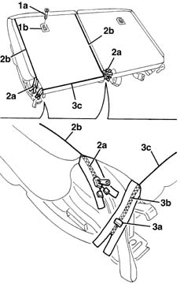
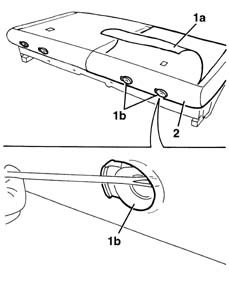
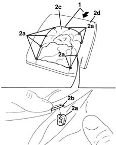
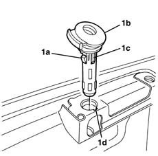
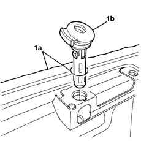
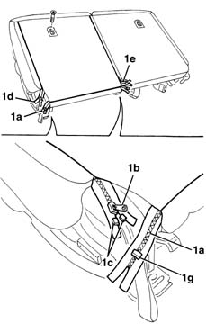

7050D33 Rear seat BACKREST COVER (one), left or right - R.R. with seat removed
- Path
- Procedures > 70 FITTINGS > 7050 REAR SEATS > 7050D REAR SEAT COVERS/UPHOLSTERY > 7050D33 Rear seat BACKREST COVER (one), left or right - R.R. with seat removed
- Kind
- repair procedure (removal / refitting; the operation number is the code)
- Applies to
- all engines; all production periods
- Interactive page
- https://sloeber94.github.io/elrnDB-lYpsln/en/#/2429669
Applies to: all engines; all production periods
 Removing
Removing
 Refitting
Refitting7050A87 JOINT COVER GUARD for (one), left or right individual seat - R.R. with seat removed
7050B12 rear seat head restraint - r r
1. Undo the bolts (1a) and remove the trims (1b) at the back of the backrest cover.
2. Using the zip fastenings (2a), completely open the side sections (2b) of the backrest cover.
3. Using pliers, remove the hook (3a) then open the lower zip fastening (3b) along the entire lower section (3c) of the backrest cover.

Applies to: all engines; all production periods
1. Lift up the cover (1a) and release it from the head restraint guide bushes (1b).
2. Keep the cover and upholstery.

Applies to: all engines; all production periods
1. Release the cover from the perimeter of the upholstery.
2. Using a screwdriver, release the retainers (2a) from the metal wire (2b) for the cover, then separate the cover (2c) from the upholstery (2d).

Applies to: all engines; all production periods
1. Using a screwdriver, release the retainer (1a) and extract the head restraint guide bushes (1b) releasing the positioning tab (1c) from the housing (1d).

Applies to: all engines; all production periods
Refitting
RemovingCheck that the cover is undamaged.
1. Position the backrest cover (1a) and fit the head restraint guide bushes (1b) in the housing.

Applies to: all engines; all production periods
Attach the retainers for the metal wire for the upholstery.
Carefully fit the cover on the upholstery.
Attach the retaining duct to the profile of the frame.
1. To close the zip fastening (1a), use the zip (1b) after having removed the hooks (1c) using pliers.
2. After having closed the zips (1a), (1d), (1e), to prevent them from opening accidentally, fit the retaining hooks (1c) and (1g) to the ends of the actual zip fastenings.

Applies to: all engines; all production periods
7050B12 rear seat head restraint - r r
7050A87 JOINT COVER GUARD for (one), left or right individual seat - R.R. with seat removed
Topics linked from this page (2)
- 7050A87 JOINT COVER GUARD for (one), left or right individual seat - R.R. with seat removed
- 7050B12 rear seat head restraint - r r